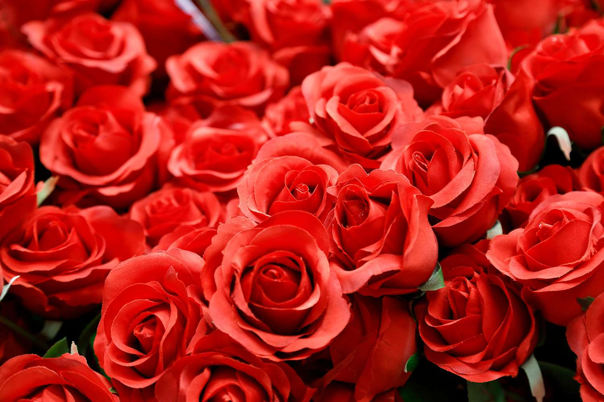

A Valentin-nap vagy Bálint-nap már világszerte a szerelmesek napja – de honnan ered ez a különleges nap? Milyen szokások élnek a különböző országokban február 14-ével kapcsolatban, és milyen ajándékoktól lesz igazán különleges a Valentin-nap?
Az egyik leggyakoribb kérdés – valószínűleg leginkább a férfiak körében – legalábbis a Google statisztikái alapján. Erre könnyű válaszolni: február 14-én. De vajon miért pont ekkor, és egyáltalán: honnan ered a szerelmesek napja, amikor a párok megajándékozzák egymást? Mielőtt erre választ adnánk, vizsgáljuk meg, kiről is kapta a nevét, illetve mit is jelent igazából ez a nap.
Amint látni fogjuk, az angolszász országokban régebb óta kialakult Valentine’s Day ünnepe a múlt század vége felé kezdett el terjedni a világban. Méghozzá a vallási hagyományokat háttérbe szorító, világi szerelmes-ünnepként. Ezen a napon a szerelmesek megajándékozzák kedvesüket egy szerelmes üzenettel, virággal, vagy más meglepetéssel, ajándékkal.

A Valentin-nap gyökerei a kereszténység előtti időszakra nyúlnak vissza. Február 15-én tartották ugyanis az ókori Rómában a Luperkália nevű termékenységi ünnepet. Lupercus, a farkas alakjában megjelenő istenség kiengesztelése érdekében ekkor két kiválasztott ifjú, egy fiú és egy leány, különféle pogány rítusokat követően, majdnem teljesen meztelenül szaladtak át a város utcáin. Kezükben kecskebőrből készült, rituális korbáccsal megostorozták az útjukba kerülő járókelőket, főleg a fiatal nőket, akik gyakran szánt szándékkal keresték velük a találkozást. Mivel a hiedelem szerint a rituális korbácsolásnak tisztító hatása volt és termékenységet, gyermekáldást hozott a megkorbácsolt nőknek.
De ennél kellemesebb része is volt az ünnepségnek: minden hajadon bedobott egy, a nevét tartalmazó cetlit egy edénybe, amiből az egyedülálló fiúk húztak. Az így létrejött párok együtt töltötték az ünnepséget, de a hagyomány szerint az is előfordult, hogy utána is együtt maradtak. Nem csoda, hogy a keresztény egyház azután rossz szemmel nézte a Luperkália szabad szeretőválasztással összekapcsolódó pogány ünnepét.
Egy legenda szerint a harmadik század végén élt Rómában egy Valentin nevű keresztény pap. Ekkoriban a császár, II. Claudius elrendelte, hogy a fiatal férfiak nem köthetnek házasságot – az uralkodó szerint így jobb katonák váltak az ifjakból. Csakhogy Valentin nem tartotta tiszteletben a császár akaratát, és keresztény módra megeskette a szerelmes ifjakat. A császár ezért börtönbe vetette, és halálra ítélte a keresztény papot. Valentin jámborsága az egyik börtönőr szívét is meglágyította, akinek Valentin összebarátkozott a lányával. A legenda úgy szól, hogy a leány vak volt, a pap azonban hitének erejével csodát tett és meggyógyította, visszaadta a látását. Valentin életét azonban ez sem mentette meg, a kivégzése napján egy búcsúüzenetet küldött a lánynak, amit úgy írt alá: “A te Valentinod”. A hagyomány szerint innen ered a Valentin-napi üzenetküldés szokása.
Végül 496-ban I. Geláz pápa elrendelte, hogy a szentként tisztelt Bálintra a pogány Luperkália ünnepnapjával majdnem pontosan egy időben, február 14-én emlékezzenek – egyúttal az előbbi ünnepet betiltotta. Azóta ez az ünnep fokozatosan a szerelmes üzenetek napjává vált, és Szent Valentin lett a szerelmesek védőszentje.
Angliában az első Valentin-napi levelet 1477-ben küldték, ma a The British Library őrzi. Az 1700-as években divatba jöttek a Valentin-verseskötetek, az 1800-as években pedig az üdvözlőkártyák.
A 16. században terjedt el a virágcsokrok ajándékozása is. Egy költő, Samuel Pepys 1667-ben egy gyönyörű verssel lepte meg feleségét ezen a napon. Elizabeth pedig egy csokor virággal viszonozta férje ajándékát. Ez a szokás aztán elterjedt a brit előkelőségek, majd az egyszerű emberek között is.